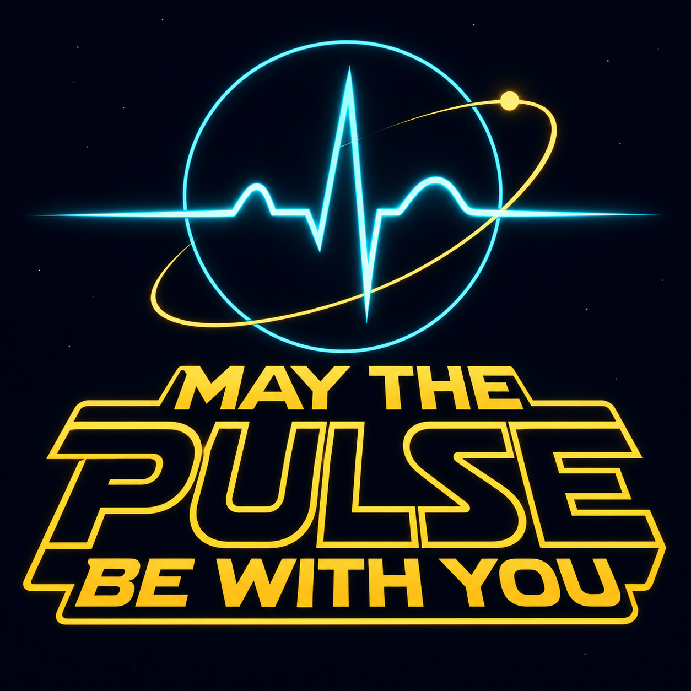
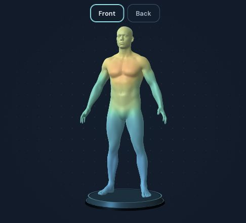

OVERVIEW / VISUAL STUDY · SAME DATA & FEATURES

Day 42 · 07:30 UTC
TR
Tomas Reyes
Mission specialist
☼
?
Sign out
YOUR DAY IN ORBIT
Overview
DEMO
↻ Refresh
Training open

Skin temperature
Simulated sensors
31 °C
33 °C
35 °C
Resting pulse
63
bpm
Body temperature
36.8
°C
Sleep
4.6
hours
Training
0
sessions